Dig Down!
Scroll to dig deep. Tap the creatures for fun facts.
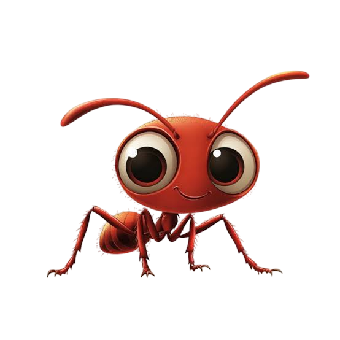
Ant
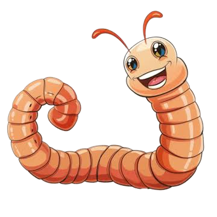
Earthworm
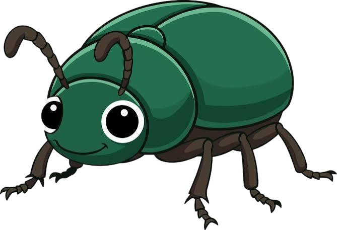
Green Beetle
A teaspoon of healthy soil can hold billions of tiny microbes.
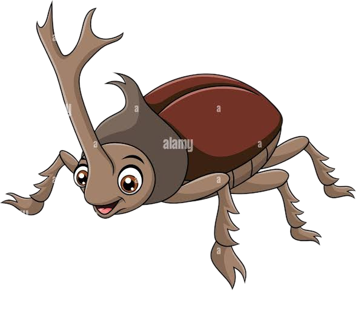
Horned Beetle
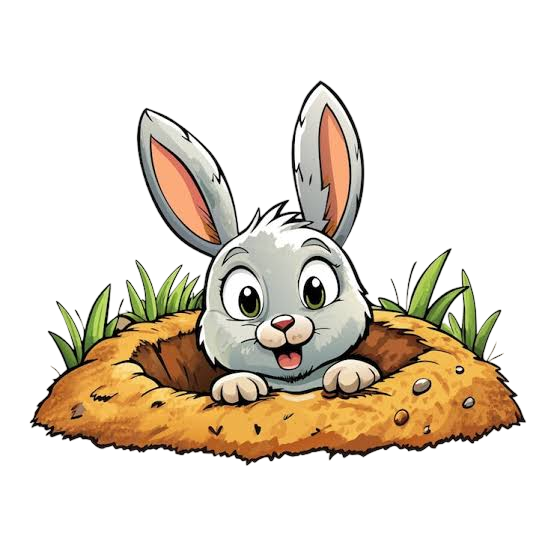
Rabbit
Some cicadas spend 17 years underground before they crawl out and sing.
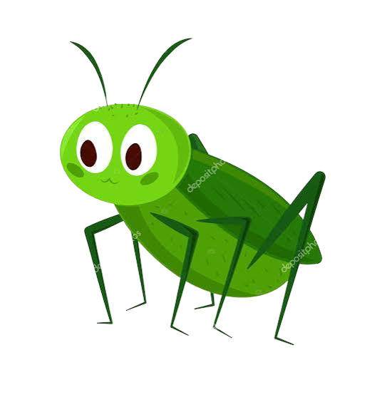
Cricket
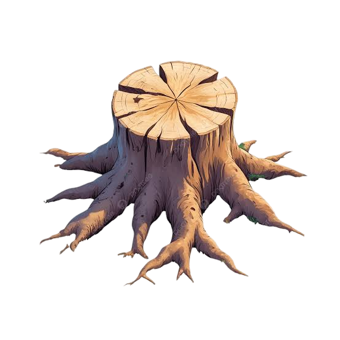
Tree Roots
Fungi link tree roots together and help them swap food.
Fungus
Trapdoor spiders hide in silk lined burrows with a hinged lid.
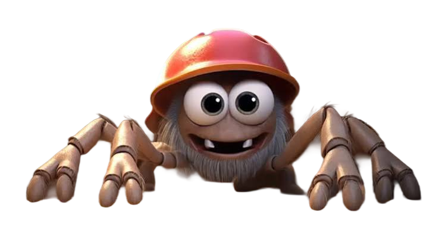
Trapdoor Spider
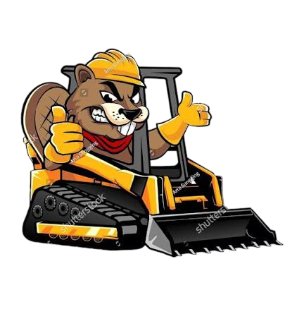
Beaver Construction Co.
Soil can take hundreds of years to build up just one centimetre.
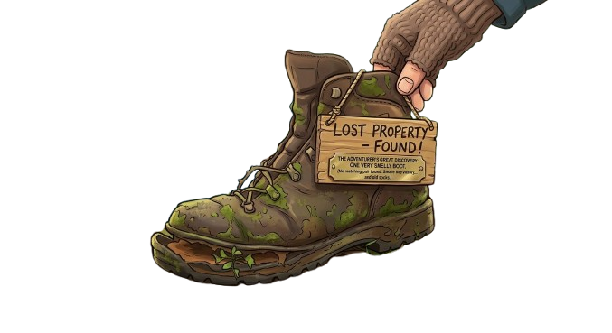
Lost Boot
smells like victory

Fossil Seashell
Fossils form when minerals slowly replace the hard parts of a plant or animal.
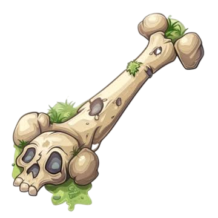
Old Bone
Treasure!
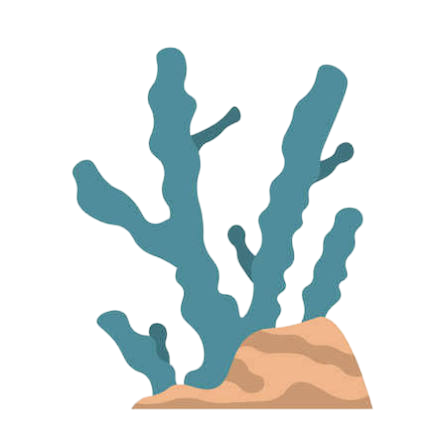
Fossil Coral
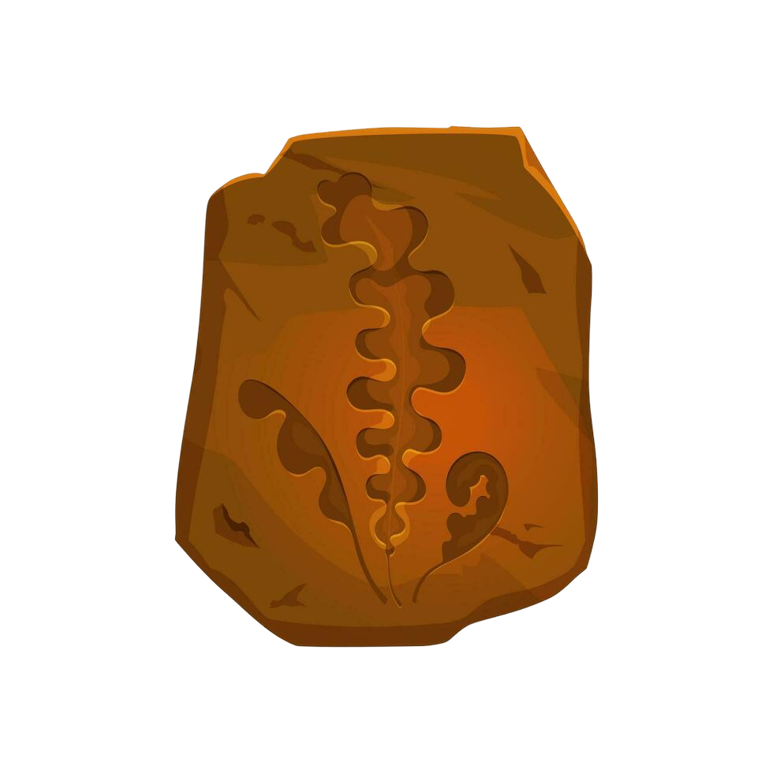
Fern Fossil
Coal is made of ancient plants squashed under rock for millions of years.
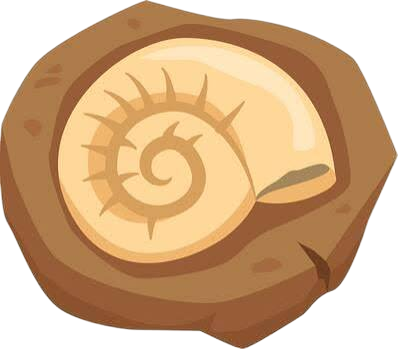
Ammonite

Trilobite
Deeper rock is usually older, like the bottom of a pile of pages.
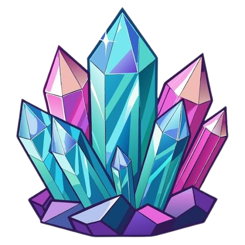
Crystals
Dinosaurs ruled the Earth for roughly 165 million years.
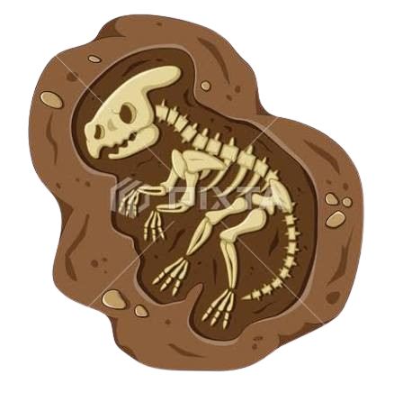
Dino Skeleton
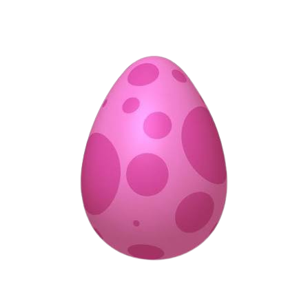
Dino Egg
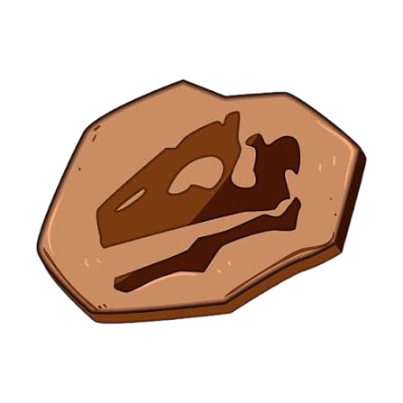
Dino Skull
Some dinosaurs grew as long as three buses parked in a row.
Humans have drilled about 12 km down. We are only at 107 m. Almost there!
Z z z

Shhh, sleeping...Found you, Orpheus!